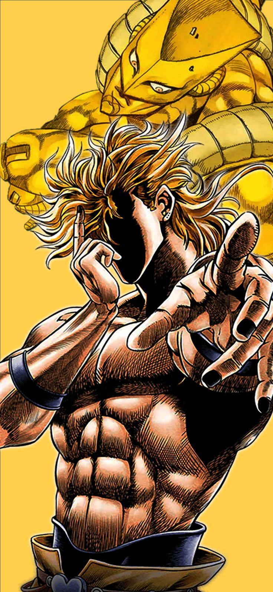

O seriji
JoJo's Bizarre Adventure je popularna manga i anime serija koja prati generacije obitelji Joestar kroz borbu protiv nadnaravnih prijetnji. Svaka nova sezona donosi novog junaka, novi stil i nevjerojatne borbe uz pomoć "Standova" – duhovnih manifestacija moći.
Dio Brando
Glavni negativac u prvim dijelovima serijala. Vampir koji se bori protiv Joestara koristeći svoj opasni Stand: The World.
Jotaro Kujo
Najpoznatiji JoJon. Njegov Stand, Star Platinum, poznat je po nevjerojatnoj brzini i snazi i velikoj preciznosti.
Speedwagon
Od uličnog borca do saveznika Joestara, postaje osnivač zaklade koja podržava borbu protiv zla i bitna je kroz cijelu priču
Fun Fact
Seriju je stvorio Hirohiko Araki 1987. godine i još uvijek traje! Svaki dio ima potpuno novi stil i atmosferu.